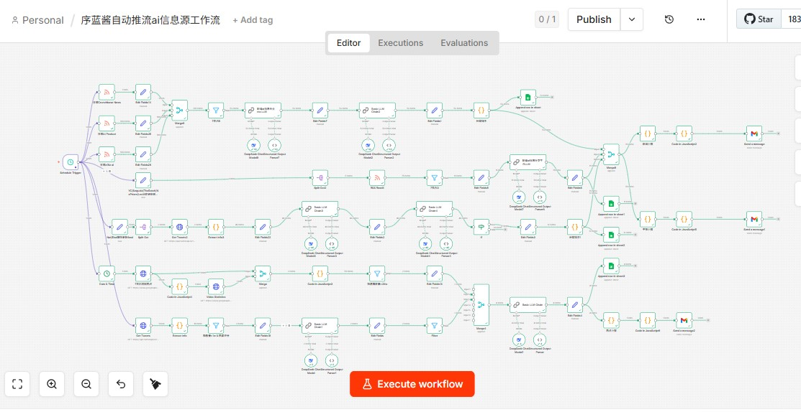
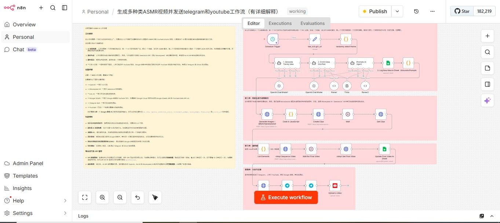

Portfolio / Kairui Bi
06
featured demos with visuals and workflow context
IB
student background in AI agents and data science
Build
projects and products developed by Kairui Bi
AI AGENTS / AUTOMATION DEMOS / DATA SCIENCE / PRODUCT INTERFACES
I build AI agents and workflow tools that save time.
IB student in BC, Canada focused on AI agents, data science, and practical tools.
Projects, demos, and experiments by Kairui Bi.
AI sales copilot
Daily AI digest
ASMR video generator
Phosphene simulator
Workflow builder
Command menu
Live portfolio
Scroll for demos, workflow thinking, and fit.

Featured visual
Pre-call intelligence system
Research context turned into a useful pre-call brief.

Daily AI signal
n8n workflow that curates AI updates into daily email.
AI agent builder

Content automation
n8n workflow for planning, generating, and publishing ASMR videos.
Positioning
IB student and AI agent builder in BC, Canada.
Strength
Turning vague automation ideas into usable workflows and outputs.
Status
Demo credibility
Real workflows, clear outcomes.
Demos across AI digests, research pipelines, meeting prep, content automation, product UI, and vision tools.
Digital avatar / tutorials
XuLan packages practical AI knowledge and tutorials.
I use XuLan for AI automation notes, source packs, workflow tutorials, and a public Feishu library.

AI agent thinking
I treat agents as scoped workflow systems.
The goal is to route the right work, keep outputs useful, and give people better decision context.
I optimize for visible, scoped, trustworthy workflows.
A good system has a clear job, a clear boundary, and an output that helps people move faster.
Explain the route
Respect confidence limits
Keep human context visible
Signal routing still needs logic
Useful agents need thresholds, ranking rules, fallback paths, and explainable source choices.
Research should become context
Retrieval matters when it becomes briefings, pre-call notes, and outputs people can use.
Human-in-the-loop stays visible
Review points, approvals, and confidence boundaries make automation easier to trust.
Privacy and process come early
Workflow design starts with data touched, output destinations, and what stays internal.
About / resume
My profile connects AI implementation, data science, and product clarity.
I like systems with a clear job, visible workflow, and immediately useful output.
Profile readout
I work best on useful AI features, clear workflows, and trustworthy interfaces.
I am an IB student focused on AI agent implementation and data science. This portfolio shows that through demos, system design, and product surfaces.
Workflow reasoning
AI agents
Data science
Computer vision
Best fit
AI product engineering, automation tooling, data science, and user-facing interfaces.
Working style
Turn ambiguity into structure and keep outputs easy to review.
Current mode
- AI-agent workflows for digests, research, meeting prep, and content automation.
- Automation systems that connect sources, messaging, delivery, and context.
- Interfaces that explain workflow instead of hiding behind generic AI language.
- AI agents, computer vision, C programming, prompt design, and workflow reasoning.
- JavaScript, static web architecture, UI systems, and product pages.
- IB coursework, data processing study, and hands-on AI-agent experiments.
- AP Physics C tutor at Compass Point Educators since January 2025.
- IB student with additional data processing study at Neoschool.
- Builder of demos that connect AI ideas to practical workflows.
I have a Proc. SPIE publication on facial expression recognition comparing MobileNetV2, VGG-16, ResNet, and Swin Transformer. I am looking for opportunities to build practical AI products and data-driven systems.
Contact
A direct path for recruiters and collaborators.
Email is fastest; LinkedIn is the public profile reference.
Hiring conversations
For recruiter outreach, engineering roles, and practical AI product fit.
Demo walkthroughs
For deeper context on digest, pre-call, content, or vision workflows.
Collaboration
For AI-agent workflows, automation systems, and interface work.